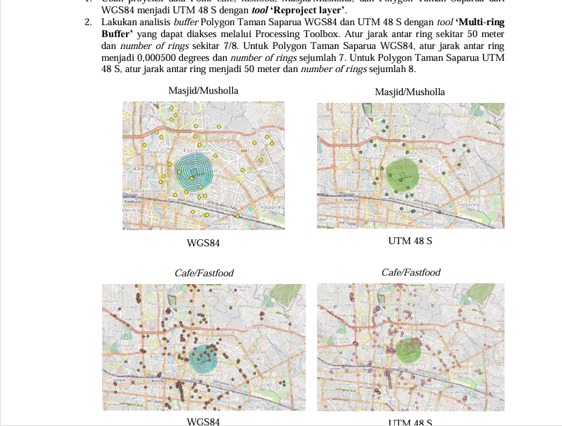

Welcome!

Hello! My name is Alia Junisar Shafira. I'm a freshgraduate from University of Indonesia majored in Geography.
I'm passionate about remote sensing and Geographic Information Systems (GIS).
My Educational background
- Bachelor's Degree in Geography, University of Indonesia (Aug 2020 - Feb 2025)
- Bachelor's Degree in Computer Science, University of Indonesia (Unfinished | Aug 2018 - Jul 2020)
My Experiences:
- Freelance Beta Tester GEO MAPID, PT Multi Area Planning Indonesia (MAPID) (Aug 2025)
- Apprenticeship Program & Event Admin - Marketing Division, Harisenin.com (May 2025 - Aug 2025)
- Freelance Property Data Validator, PT Multi Area Planning Indonesia (MAPID) (Jun 2025)
My Projects/Courses/Trainings
| No. | Project | Institution | Year | Project/Course/Training Snippet |
|---|---|---|---|---|
| 1 | WebGIS Development MAPID Academy Batch 1 | PT Multi Areal Planning Indonesia
(MAPID) |
Aug 2025 - Oct 2025 |  |
| 2 | Geospatial for Disaster: Modelling and Simulation of Mount Sumbing Lava Flow
Based on Digital Elevation Model (DEM) Data |
Geosensei Teknologi | Jul 2025 |  |
| 3 | Microsoft Excel Intensive Bootcamp for Data Analysis Batch 33 | Edspert.id | Apr 2025 - May 2025 |  |
| 4 | Determining Optimum Location of Public Electric Vehicle Charging Stations (SPKLU)
Using GIS & Machine Learning |
Geosoftware.ID | May 2025 |  |
If you have any advice or questions, you can hit the form below.
Contact Me
Feel free to reach me out at:
- Email: aliajunisarshafira@gmail.com
- Phone: +62 821-1353-7756
- LinkedIn: Alia Junisar Shafira